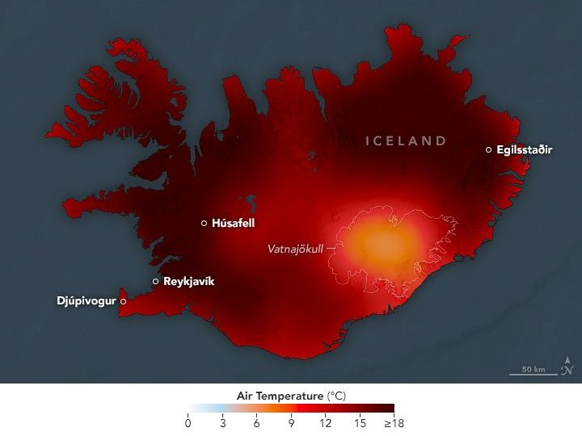

Spring Heat Wave in Iceland
Summer-like weather arrived early in Iceland, where for more than a week in May 2025, temperatures soared well above average for the time of year. According to the Icelandic Meteorological Office, the heat wave was notable for its early arrival, longevity, and geographic scope.
The heat settled over the island nation from May 13 to May 22, marking 10 consecutive days in which the temperature reached at least 20 degrees Celsius (68 degrees Fahrenheit) somewhere on the island. On May 17 and 18, during the heat wave’s peak, more than half of the country’s weather stations recorded temperatures at or above that mark.
The warmth on May 18 is depicted on this map, which shows air temperatures modeled at 2 meters (6.5 feet) above the ground. It was produced by combining satellite observations with temperatures predicted by a version of the GEOS (Goddard Earth Observing System) model, which uses mathematical equations to represent physical processes in the atmosphere. The darkest reds indicate areas where temperatures reached at least 18°C (64°F). Note that temperatures appear somewhat cooler near the region’s ice caps, including Vatnajökull.
A ground station in Húsafell, a historic farm and church estate in western Iceland, measured 25.7°C (78.3°F) on May 18 and became the site’s hottest day on record, according to the meteorological office. The highest temperature of the heat wave, 26.6°C (79.9°F), was recorded at the Egilsstaðir Airport, in eastern Iceland, on May 15.
The heat arrived with a high-pressure system that moved over the island from the southeast. Northeastern and eastern parts of the country faced the brunt of the heat during the 10-day period, with temperatures in places that reached at least 10°C (18°F) above the 2015-2024 average for the time of year. Even in southern areas, where it was “cooler,” temperatures hovered around 3°C (5°F) above normal.
According to news reports, the early season warmth has caused several species of insects, from butterflies to crane flies, to emerge weeks early. And in northern areas, the warmth has proved favorable for the early planting of potatoes.
Significant heat waves have occurred in Iceland in recent decades, notably in 2004 and 2008, when temperatures exceeded 20°C (68°F) for several days in a row. Those events, however, happened during the summer months. The highest temperature ever recorded in Iceland was 30.5°C (86.9°F), measured near Djúpivogur on June 22, 1939.